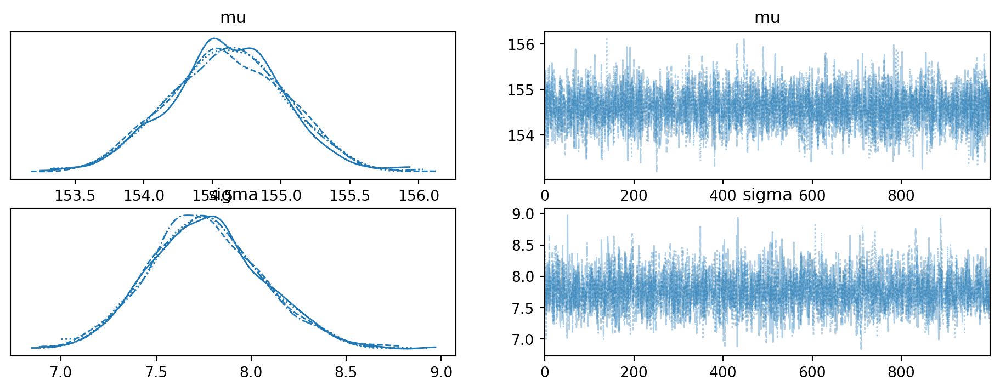

Code
```{python}
print("Hello World!")
1+1
```Hello World!2Matthew Hoctor
February 2, 2025
February 25, 2025
How does one go from a linux installation with python3 and RStudio to rendering .qmd files with python and pyMC code chunks? In this blog post I document the steps I took to get these things set up.
First, within RStudio select a default python version for RStudio (and un-check ‘Automatically activate project-local Python environments’); and for good measure create a keyboard shortcut to insert python code chunks (I opted to remap Ctrl+Alt+P from ‘Re-Run Previous Code Chunk Execution’).
RStudio requires the reticulate package to execute python code chunks; it can be installed with install.packages:
In order to render python code chunks quarto requires the jupyter python package. It can be installed with:
To check if quarto thinks it’s set up to render python chunks:
#| echo: fenced
quarto check jupyterDid it actually work?
Apparently so.
Which python packages will be needed to actually use pyMC? Here are the ones I installed in advance:
It would make too much sense to install python packages by calling pip from a python chunk, like so:
```{python}
pip install pymc bambi arviz kulprit pymc-bart preliz nutpie numpy scipy pandas matplotlib seaborn nose pydot
```Unfortunately reticulate doesn’t support this; but note that this chunk will run properly when rendered, as you will recall that quarto renders this with the jupyter python package. Reticulate could be used, e.g. reticulate::py_install("pymc",pip=TRUE), but nothing beats the good old command line:
```{bash}
python3 -m pip install pymc bambi arviz kulprit pymc-bart preliz nutpie numpy scipy pandas matplotlib seaborn nose pydot
```The following outdated packages (python3 pip list --outdated) were updated:
For this example we will recreate model 4.1 from the Statistical Rethinking text, as demonstrated in the pymc resources:
Setup the python libraries:
Readers who have already read Statistical Rethinking may recall that the Howell1 dataset contains demographic data (height, weight, age, gender) from Kalahari Kung San people. Load the dataset:
A mathematical description of model 4.1 (\(h_i\) is the height of participant \(i\)):
\[ \begin{align} h_i &\sim \operatorname{Normal} (\mu, \sigma) \\ \mu &\sim \operatorname{Normal} (178, 20) \\ \sigma &\sim \operatorname{Uniform} (0, 50) \\ \end{align} \]
This model was translated into pyMC as:
Using arviz to summarize the results; first the trace plot:

array([[<Axes: title={'center': 'mu'}>, <Axes: title={'center': 'mu'}>],
[<Axes: title={'center': 'sigma'}>,
<Axes: title={'center': 'sigma'}>]], dtype=object)And a data table summarizing the results: